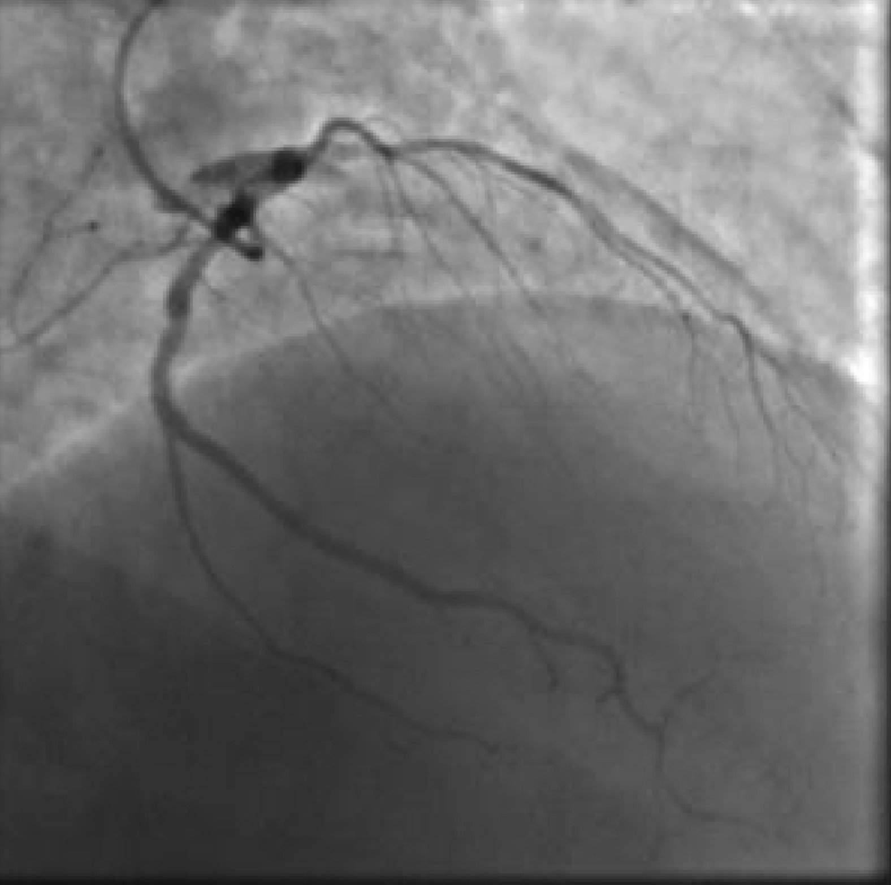
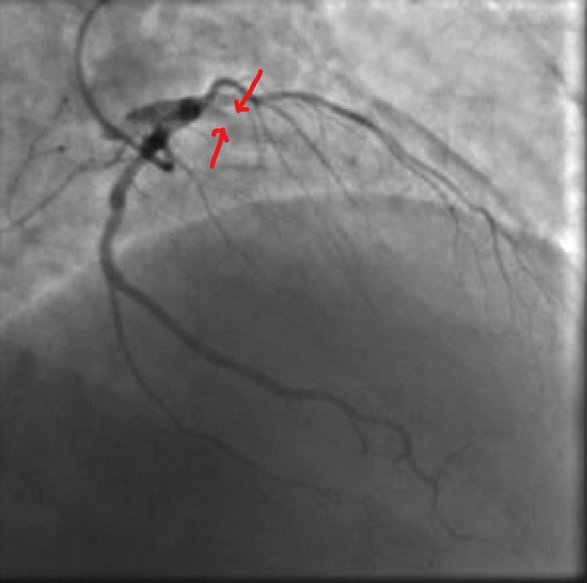
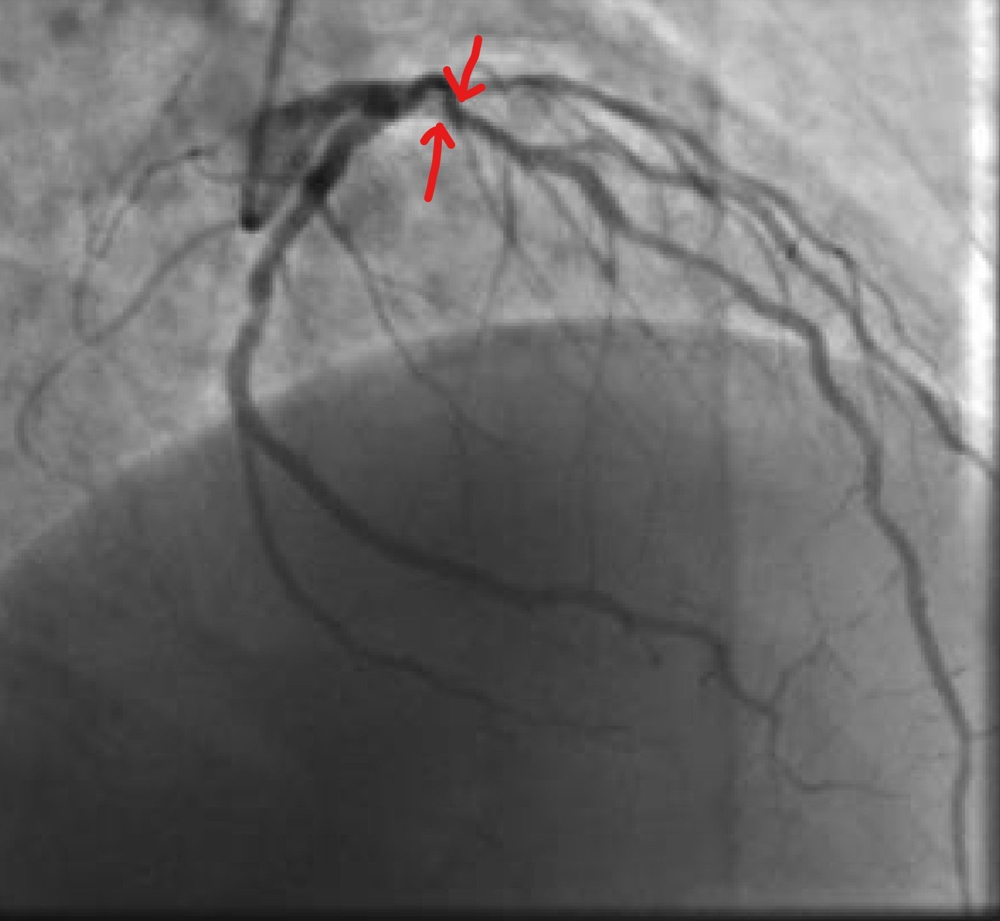
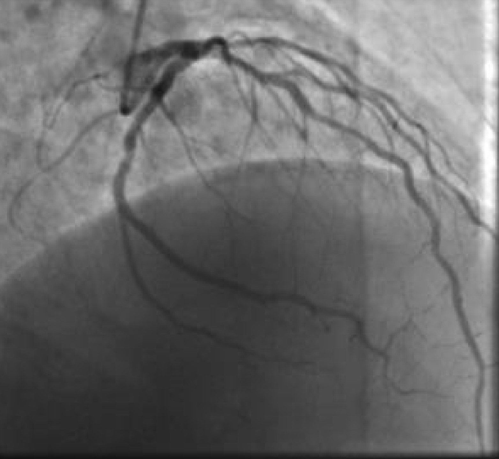
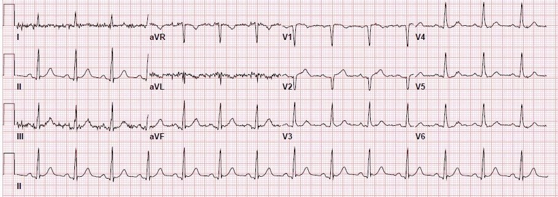
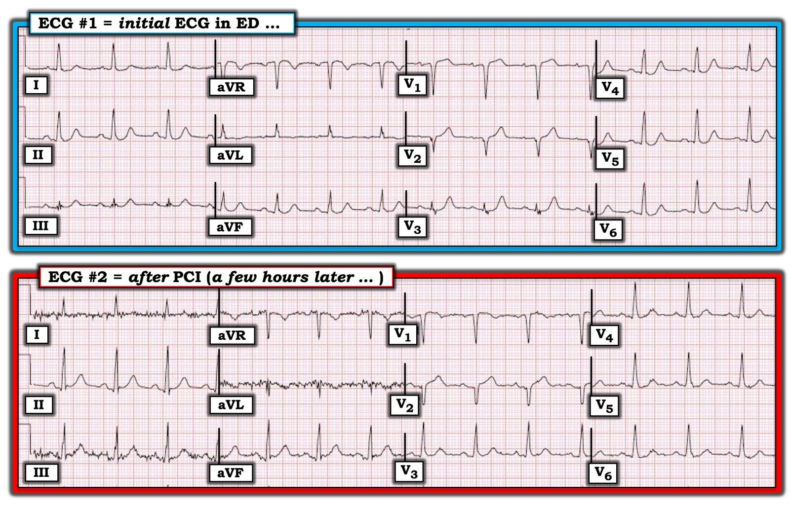

11/07/2019 — Nam giới 40 tuổi đau ngực từ đêm qua
Bản dịch tiếng Việt của bài "A 40 year old man with chest pain since last night" – Dr. Smith’s ECG Blog. Giữ nguyên toàn bộ 10 hình ảnh của bản gốc.
Viết và gửi bởi Ashley Mogul, với phần biên tập của Pendell Meyers và Steve Smith
Một nam giới 40 mấy tuổi, mới cai thuốc lá gần đây nhưng ngoài ra không có tiền sử bệnh lý nào đã biết, đến viện vì đau ngực từ tối hôm trước. Cơn đau kéo dài liên tục, kèm nôn và vã mồ hôi. Bệnh nhân quyết định đến viện vào ngày hôm sau khi cơn đau vẫn không dứt.
Đây là điện tâm đồ lúc nhập viện (không có điện tâm đồ cũ để so sánh):

Các dấu hiệu đáng chú ý gồm ST chênh lên (STE) nhẹ ở V1 kèm sóng T dương, sóng T hơi lớn ở V2-3 (có thể là tối cấp nếu so với điện tâm đồ nền), và ST chênh xuống soi gương nhẹ ở II, III, aVF, V4-V6.
Meyers: Điện tâm đồ này được nhắn tin cho tôi mà không kèm thông tin lâm sàng nào, và tôi đã trả lời: “Trông giống một OMI LAD rất tinh tế. Nếu bệnh cảnh lâm sàng có bất cứ điểm nào phù hợp với hội chứng vành cấp (ACS), tôi sẽ kích hoạt báo động tim (heart alert) [Ashley và tôi được đào tạo tại Stony Brook, nơi chúng tôi gọi “Báo động tim” (Heart Alert) cho một tình huống/điện tâm đồ không đáp ứng tiêu chuẩn STEMI nhưng chúng tôi vẫn lo ngại về nhu cầu thông tim cấp cứu và đánh giá ACS cấp cứu] và ghi các điện tâm đồ liên tiếp, trừ khi tôi có được một điện tâm đồ nền giống hệt (theo tôi là khó có). Một ca rất, rất tinh tế. Chuyện gì đã xảy ra?”
Những dấu hiệu này rất tinh tế nhưng đáng ngờ tắc LAD, như chúng ta đã thấy trong nhiều ca tương tự (nhưng ít khó hơn) trên blog này:
A man in his sixties with chest pain at midnight with undetectable troponin (Một nam giới sáu mươi mấy tuổi đau ngực lúc nửa đêm với troponin không phát hiện được)
How long would you like to wait for your Occlusion MI to show a STEMI? Sometimes serial ECGs minimizes the delay. (Bạn muốn chờ bao lâu để nhồi máu cơ tim do tắc của mình biểu hiện thành STEMI? Đôi khi các điện tâm đồ liên tiếp giúp giảm thiểu sự chậm trễ.)
What will you do for this patient transferred to you who is now asymptomatic? (Bạn sẽ làm gì cho bệnh nhân được chuyển đến bạn, hiện đã hết triệu chứng này?)
Crushing Chest pain, but the ECG is not obvious; later there is both RBBB and LBBB (Đau ngực dữ dội như bị đè ép, nhưng điện tâm đồ không rõ ràng; về sau xuất hiện cả RBBB lẫn LBBB)
35 yo woman with LAD occlusion manifesting with only hyperacute Ts and inferior ST depression, also missed by computer (Phụ nữ 35 tuổi bị tắc LAD chỉ biểu hiện bằng sóng T tối cấp và ST chênh xuống thành dưới, máy tính cũng bỏ sót)
Ban đầu những dấu hiệu này không được nhận ra. Xét nghiệm được gửi đi và kết quả troponin I ban đầu là 2.14 ng/mL. Lúc đó, bệnh nhân được dùng 324 mg aspirin (ASA) và nitroglycerin (NTG) ngậm dưới lưỡi. Khoa tim mạch được gọi và bệnh nhân được đưa đi thông tim khẩn, với thời gian từ lúc đến khoa cấp cứu (ED) tới khi thông tim khoảng 1 giờ 45 phút.
Phát hiện tắc huyết khối 100% LAD đoạn gần với dòng chảy TIMI 0, được đặt stent với kết quả chụp mạch rất tốt và dòng chảy TIMI 3. Bệnh nhân cũng có bệnh động mạch vành (CAD) không cấp tính ở RCA (50%) và LCX (50%).
Hình ảnh thông tim:








Điện tâm đồ vài giờ sau:


Một số chuyển đạo trước đó có ST chênh xuống (STD) nay đã hồi phục. Sóng T ở chuyển đạo V1 không còn dương, với phần cuối sóng T đảo ngược, nhiều khả năng do tái tưới máu.
Siêu âm tim cho thấy vô động thành trước vách và thành trước cũng như mỏm tim, với LVEF 45%. Troponin I tăng lên 3.93 ng/mL nhưng không được theo dõi đến đỉnh.
Những điểm cần học:
Không phải mọi OMI đều biểu hiện thành STEMI. Tắc hoàn toàn LAD có thể cực kỳ tinh tế như trong ca này. Hãy nhớ ca này và các ca tương tự (các link ở trên) cho thấy hình ảnh tắc LAD này, bao gồm ST chênh lên tinh tế kèm sóng T dương ở V1-2 với ST chênh xuống soi gương ở các chuyển đạo bên và thành dưới. Khi còn nghi ngờ, hãy ghi các điện tâm đồ liên tiếp và theo dõi các dấu hiệu thiếu máu cục bộ dù đã điều trị nội khoa.

===================================
Bình luận của KEN GRAUER, MD (11/7/2019):
===================================
Chúng tôi xin cảm ơn Dr. Mogul, Dr. Meyers và Dr. Smith về ca bệnh minh họa này.
- Tôi tập trung vào việc diễn giải bản ghi tại khoa cấp cứu ban đầu ( = Điện tâm đồ #1 trong Hình 1). Mặc dù các dấu hiệu điện tâm đồ ở đây khó nhận ra — tôi cho rằng chúng không nên bị bỏ sót.


SUY NGHĨ CỦA TÔI về Điện tâm đồ #1 — Bệnh nhân là nam giới 40 mấy tuổi có tiền sử hút thuốc lá — đến viện vì đau ngực mới khởi phát, kéo dài liên tục gần suốt đêm, và mặc dù có kèm nôn và vã mồ hôi — bệnh nhân này vẫn không đến khoa cấp cứu cho tới ngày hôm sau khi cơn đau ngực vẫn còn.
- Đây là một Bệnh sử có tần suất mắc cao hơn đối với bệnh mạch vành cấp. Ý tôi là, trách nhiệm thuộc về chúng ta phải loại trừ khả năng ngay cả những thay đổi điện tâm đồ tinh tế cũng có thể là cấp tính — chứ không phải ngược lại.
Phân tích mô tả Điện tâm đồ #1:
- Nhịp xoang tần số ~85/phút. Các khoảng PR, QRS và QTc bình thường. Trục mặt phẳng trán bình thường (khoảng +40 độ). Không có lớn các buồng tim.
Về Thay đổi Q–R–S–T:
- Có phức bộ QS ở các chuyển đạo V1 và V2. Có khía ở phần đầu của sườn xuống sóng S tại chuyển đạo V2. Có thể có sóng q rất nhỏ ở các chuyển đạo ngực bên.
- Vùng chuyển tiếp (nơi chiều cao sóng R bắt đầu lớn hơn độ sâu sóng S) nằm giữa chuyển đạo V2 và V3, điều này là bình thường. Tuy vậy — biên độ sóng R rất thấp cho tới tận chuyển đạo V4 …
Dấu hiệu đáng chú ý nhất trên điện tâm đồ #1 liên quan tới Các thay đổi sóng ST-T:
- Nhìn tuần tự, trước tiên là 6 chuyển đạo chi — rồi tới 6 chuyển đạo ngực — điều ngay lập tức thu hút sự chú ý của tôi là sóng T ở chuyển đạo V2 trông cao-hơn-mức-đáng-có (tức là, không tương xứng) khi chuyển đạo này hoàn toàn không có sóng r.
- Tiếp theo, mắt tôi bị “níu lại” bởi hình dạng của sóng ST-T ở chuyển đạo V3. Đơn giản là KHÔNG THỂ NÀO sóng ST-T ở chuyển đạo V3 lại “bình thường”. Một sóng ST-T bình thường không có đoạn ST thẳng (dạng bậc thềm) như ta thấy trên điện tâm đồ #1, rồi đột ngột vươn lên thành một sóng T cao không tương xứng (cao gấp 1½ lần chiều cao sóng R ở chuyển đạo này), và có đáy sóng T rộng đến như vậy.
- BÌNH LUẬN: Tôi xin nhấn mạnh rằng mặc dù có phần phân tích mô tả chi tiết bằng chữ ở trên — thực sự tôi chỉ mất chưa đầy 5 giây để đi đến nhận định về sóng ST-T — và không quá 2-3 giây nữa để đánh giá chuyển đạo V2 và V3. Ngay cả khi không nhìn bất cứ điều gì khác trên điện tâm đồ này — ở một bệnh nhân bị đau ngực mới đáng lo ngại, hình dạng sóng ST-T ở chuyển đạo V3 + sóng T cao không tương xứng ở chuyển đạo V2 lân cận là đủ (theo ý kiến của tôi) để nói rằng, dù điều này có thể tinh tế và chúng ta không thể chắc chắn 100% — bệnh nhân này xứng đáng được thông tim sớm.
Càng xác định được nhiều chuyển đạo bổ sung trên điện tâm đồ #1 có bất thường sóng ST-T — thì khả năng sự nghi ngờ của chúng ta về một biến cố tim cấp (dựa trên bệnh sử này + hình dạng sóng ST-T ở chuyển đạo V2 và V3) là đúng càng lớn:
- Sóng ST-T ở chuyển đạo V1 lân cận trên điện tâm đồ #1 là bất thường. Thấy ST chênh lên ≥1.5 mm ở chuyển đạo V1 là không bình thường — và, với hình dạng sóng ST-T ở chuyển đạo V2,V3 — hầu như không còn nghi ngờ gì rằng ST chênh lên mà ta thấy ở chuyển đạo V1 là một phần của quá trình này!
Các dấu hiệu khác trên điện tâm đồ #1 tinh tế hơn. Có lẽ tôi đã không để ý nhiều tới chúng NẾU hình dạng sóng ST-T ở chuyển đạo V3 không bất thường rõ rệt đến vậy, cùng với các dấu hiệu sóng ST-T kèm theo ở các chuyển đạo lân cận V1 và V2 (như đã mô tả ở trên).
- Xét tới hình dạng sóng T tối cấp ở chuyển đạo V3 — gần như chắc chắn rằng ST chênh xuống dạng lõm nhẹ-nhưng-có-thật và sóng T nổi bật ở chuyển đạo V4 là một phần của quá trình này. Chẳng phải hình dạng của phần trên sóng T ở chuyển đạo V4 (nếu không nói là cả ở V5 và V6) trông rất giống hình dạng các sóng T ở chuyển đạo V3 và V2 mà giờ ta đã biết là tối cấp đó sao?
- Thay đổi sóng ST-T ở các chuyển đạo chi ít rõ rệt hơn nhiều. Nhưng trong bối cảnh các dấu hiệu ở chuyển đạo ngực vừa mô tả — sóng T ở chuyển đạo III trông tối cấp (nó cao bằng sóng R ở chuyển đạo III, với đáy cực kỳ rộng so với sóng R rất nhỏ này). Cuối cùng, mặc dù không có ST chênh xuống ở chuyển đạo aVL — hình ảnh sóng ST-T dẹt mà ta thấy ở chuyển đạo này không phải là đáp ứng bình thường khi sóng R ở aVL dương.
Xem lại một lần nữa sự tăng tiến sóng R ở các chuyển đạo ngực:
- Khía ở sườn xuống của sóng S trong phức bộ QS (như ta thấy ở chuyển đạo V2 của điện tâm đồ #1) — làm tăng khả năng phức bộ QS này phản ánh một sóng Q nhồi máu.
- Mặc dù sóng R chiếm ưu thế có xuất hiện ở chuyển đạo V3 của điện tâm đồ #1 — sóng R này chỉ cao vỏn vẹn 3 mm. Điều này càng củng cố thêm rằng QS ở chuyển đạo V1,V2 (với khía ở sườn xuống sóng S tại V2) + các thay đổi sóng ST-T bất thường ở chuyển đạo V1 đến V4 đã mô tả ở trên đều là một phần của cùng một quá trình cấp tính đang diễn ra!
ĐIỀU CỐT LÕI: Mặc dù điện tâm đồ #1 không thỏa mãn định nghĩa STEMI — như Dr. Meyers đã nói, nó thực sự trông giống OMI LAD cấp. Và ở một bệnh nhân có bệnh sử đáng lo ngại đến như vậy — tôi không thấy làm sao có thể biện minh cho việc không kích hoạt báo động tim.
Những ĐIỂM CẦN HỌC Bổ sung: Một trong những cách tốt nhất để nâng cao khả năng nhận ra các thay đổi cấp tính tinh tế — là so sánh điện tâm đồ ban đầu với một hoặc nhiều điện tâm đồ sau tái tưới máu ( = Điện tâm đồ #2 trong Hình 1).
- Để chắc chắn việc so sánh các bản ghi liên tiếp là hợp lệ — luôn phải đảm bảo trục mặt phẳng trán, sự tăng tiến sóng R và hình thái QRS đều tương đương nhau. Và, có những khác biệt nhỏ về mặt này khi so sánh điện tâm đồ #1 với điện tâm đồ #2. Cụ thể, một số chuyển đạo (rõ nhất là các chuyển đạo I, III; aVR,aVL,aVF) có nhiễu đường nền trên điện tâm đồ #2 mà trước đó không có. Ngoài ra, trục mặt phẳng trán trên điện tâm đồ #2 đứng hơn một chút (khoảng +75 độ, so với trục +40 độ trên điện tâm đồ #1). Tuy vậy, tôi tin rằng phần lớn — việc so sánh hình dạng sóng ST-T giữa 2 bản ghi này là hợp lệ.
- Có sự khác biệt về hình dạng QRS ở chuyển đạo V3 giữa 2 bản ghi. Dù không thể chứng minh — tôi ngờ rằng việc sóng R chiếm ưu thế xuất hiện trở lại ở chuyển đạo V3 trên điện tâm đồ #2 là do tái tưới máu LAD, chứ không phải do bất kỳ thay đổi nào trong vị trí đặt điện cực chuyển đạo trước tim.
- Lưu ý rằng sau tái tưới máu (tức là, trên Điện tâm đồ #2) — thì: i) giờ ST chênh lên ở chuyển đạo V1 chỉ còn không quá mức vết (nếu có); ii) sóng T ở chuyển đạo V2 trông không còn mất tương xứng nhiều như trước PCI; iii) ngay cả khi tính đến hình dạng QRS đã thay đổi ở chuyển đạo V3 — sóng ST-T ở V3 trên điện tâm đồ #2 giờ trông lành tính; và, iv) gợi ý rất tinh tế về thay đổi sóng T tối cấp ở các chuyển đạo V4, V5, V6, cũng như chuyển đạo III — không còn trên điện tâm đồ #2. Các đoạn ST ở những chuyển đạo này cũng trông tốt hơn.
- ĐIỂM THEN CHỐT CUỐI CÙNG (PEARL): Tôi thấy vô cùng hữu ích khi tìm 1 hoặc 2 chuyển đạo trên bản ghi ban đầu mà không chút nghi ngờ là bất thường. Một khi đã tìm được những chuyển đạo như vậy (chẳng hạn chuyển đạo V3 và V2 trên điện tâm đồ #1) — việc nhận diện các chuyển đạo khác có dấu hiệu tinh tế hơn nhưng rõ ràng bất thường trở nên dễ dàng hơn nhiều.

ĐIỂM Cộng: Hãy quay lại điện tâm đồ #2. Lưu ý nhiễu ở 5 trong 6 chuyển đạo chi. Vấn đề gây ra nhiễu xuất phát từ chi nào?
TRẢ LỜI: Hoàn toàn không có nhiễu ở chuyển đạo II của điện tâm đồ #2. Chuyển đạo II lưỡng cực được tạo ra từ hiệu điện thế giữa điện cực ở chân (F) và điện cực ở tay phải (RA). Nhưng điện cực tay trái (LA) không tham gia tạo ra chuyển đạo II. Ngược lại, điện cực LA có tham gia tạo ra cả chuyển đạo I và chuyển đạo III (chính là các chuyển đạo có nhiễu). Việc tay trái (LA) là chi “thủ phạm” được củng cố bởi thực tế là ở các chuyển đạo tăng thế, mức nhiễu lớn nhất ở chuyển đạo aVL, và xấp xỉ một nửa mức đó ở chuyển đạo aVR và aVF. BẤM VÀO ĐÂY — để xem một bài viết ngắn của Rowlands và cs. giải thích các khái niệm này chi tiết hơn.